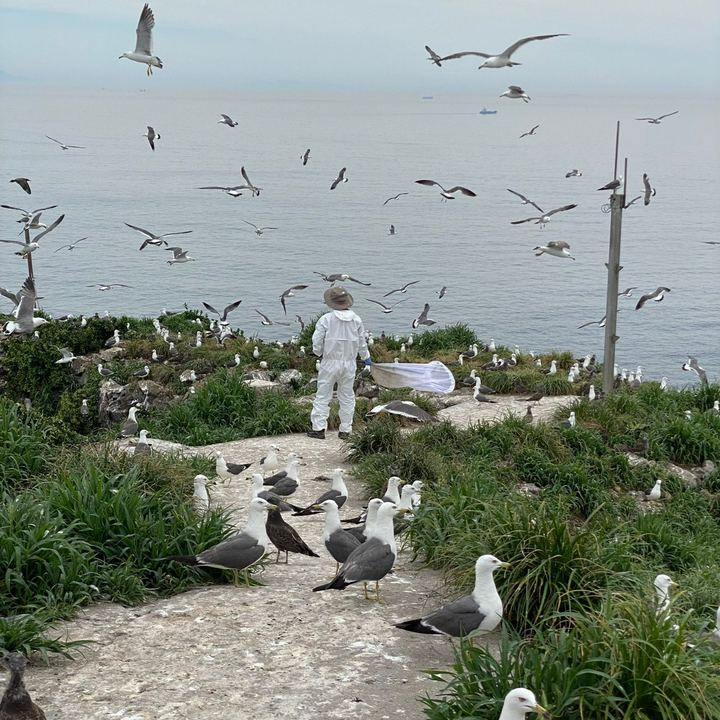
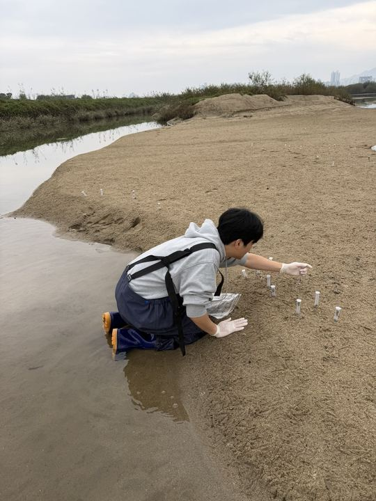
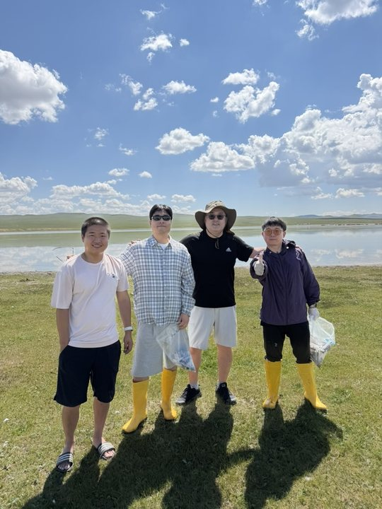
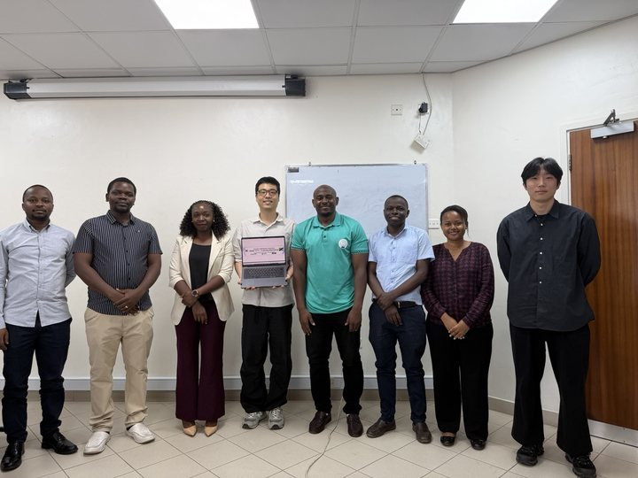
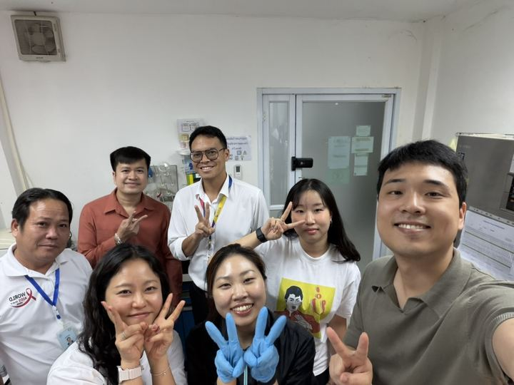

I am a veterinarian (DVM) and MS student in Prof. Dong-hun Lee's Wildlife Health
Laboratory at the College of Veterinary Medicine, Konkuk University, Seoul. As an
undergraduate at Gyeongsang National University, I joined the Laboratory of
Veterinary Infectious Diseases, conducting regional surveillance of viral pathogens in
wild birds, wild boars and cattle, as well as antimicrobial resistance in poultry.
My master's research focuses on the circulation and genetic diversity of avian
paramyxoviruses in reservoir populations. Using whole-genome sequencing
and phylogeographic analysis, I trace their transmission within the
East Asian–Australasian Flyway and between continents. In parallel, I take part in
capacity-building projects at the national public health laboratories of Lao PDR and
Tanzania. At both laboratories, I help staff design country-specific primer
schemes for dengue virus sequencing and analyze the phylodynamics of priority pathogens,
such as measles virus in Lao PDR and Marburg virus in Tanzania.
2Ongoing Research
Viral genomic surveillance in Lao PDR and Tanzania
This project started with capacity-building workshops at the national public health laboratories of Lao PDR and Tanzania. For the workshops, I adapted the analysis pipeline to the primer schemes used in each country and to the computers available at each laboratory. I am now working with both laboratories on phylogeographic analysis of dengue virus sequences from the two countries, and of chikungunya and measles virus sequences from Lao PDR, to find out how these viruses move across borders and which lineages are circulating.
Intercontinental spread of avian paramyxoviruses
I investigated avian paramyxoviruses in AIV-negative wild bird samples using whole-genome sequencing. To understand how these viruses moved between continents and whether East Asia played a role in their spread, I now work on phylogeographic analysis of APMV-1 and APMV-4. Along the way, I also discovered a virulent Newcastle disease virus in a great cormorant and avian orthoavulavirus 16 in a cinereous vulture, a host in which it had not been reported before.
Avian influenza surveillance in wild birds
Participating in the national highly pathogenic avian influenza (HPAI) surveillance program, I collect fecal samples from wild birds across Korea and sequence whole genomes of the viruses detected.

a

b

c

d

e
Fig. 1 Fieldwork and training.
a Black-tailed gull colony, Hongdo, Tongyeongb Sampling on a sandbar, Asan, 2025c Mongolia, 2025d With the NPHL team, Dar es Salaam, 2026e With the NCLE team, Vientiane, 2026
As part of a sentinel site surveillance program for acute febrile illness, sequenced dengue, chikungunya and measles virus genomes using tiling-amplicon primers.
2024
Research Intern
Avian Disease Laboratory, Seoul National University
Learned avian influenza virus cloning and rpoB-based sequence typing of Clostridium perfringens.
2020–2025
Undergraduate Researcher
Laboratory of Veterinary Infectious Diseases, Gyeongsang National University
Worked on avian coccidiosis and ran surveillance of viruses in various animals.
8Veterinary Experience
2023
Southern Conservation Center, Korea National Park Service
Assisted with artificial insemination trials for the Asiatic black bear restoration program and with treating wild animals.
Cetacean Research Institute, National Institute of Fisheries Science
Necropsied dolphins and seals and screened for parasites and avian influenza virus.
2022
Comparative Pathology Laboratory, Asan Medical Center
Learned basic mouse histopathology and examined lung sections from drug toxicity studies.
2022
National Institute of Wildlife Disease Control and Prevention
Attended a training on the national diagnostic and response protocols for avian influenza and African swine fever.
2021
WOAH Reference Laboratory for Brucellosis, Animal and Plant Quarantine Agency
Trained in Brucella diagnostics, MLVA and MLST typing.
2020
Jeonnam Wildlife Rescue Center
Helped treat and rehabilitate rescued wildlife.
9Skills
Laboratory
Molecular diagnostics, cell culture, NGS (Illumina), in vivo experiments in chickens and disease diagnostics in poultry
Analysis
Phylogenetic and phylodynamic analysis based on BEAST X